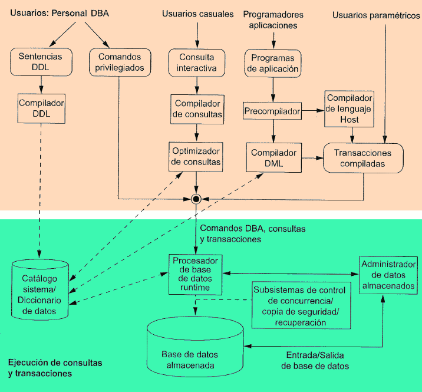

Sistema Gestor de Base de Datos (SGBD o DBMS): conjunto coordinado de programas, procedimientos, lenguajes, etc., que suministra, tanto a los usuarios no informáticos, como a los analistas, programadores, o al administrador, los medios necesarios para describir y manipular los datos contenidos en la base de datos, manteniendo su integridad, confidencialidad y seguridad.
Funciones
Un SGBD desarrolla tres funciones fundamentales:
- Función de descripción o definición: permite al diseñador de la base de datos crear las estructuras apropiadas para integrar adecuadamente los datos. Esta función se realiza mediante el lenguaje de descripción de datos o DDL.
- Función de manipulación: permite a los usuarios de la base buscar, añadir, suprimir o modificar los datos de la misma, siempre de acuerdo con las especificaciones y las normas de seguridad dictadas por el administrador. Se llevará a cabo por medio de un lenguaje de manipulación de datos ( DML) que facilita los instrumentos necesarios para la realización de estas tareas.
- Función de control: permite al administrador de la base de datos establecer mecanismos de protección de las diferentes visiones de los datos asociadas a cada usuario, proporcionando elementos de creación y modificación de dichos usuarios. Adicionalmente, incorpora sistemas para la creación de copias de seguridad, carga de ficheros, auditoría, protección de ataques, configuración del sistema, etc. El lenguaje que implementa esta función es el lenguaje de control de datos o DCL.
Componentes
Los SGBD suelen estar formados por varios componentes integrados que realizan tareas de gestión de datos:
- Motor de almacenamiento: es el elemento central de un SGBD que interactúa con el sistema de archivos nivel del sistema operativo.
- Lenguaje de consulta: permiten a los usuarios interactuar con las bases de datos (ejemplo: SQL o MQL).
- Procesador de consultas: interpreta las consultas del usuario y hace que los comandos sean comprensibles para la base de datos.
- Optimizador de consultas: proporciona ideas para mejorar el rendimiento de la base de datos y las consultas.
- Diccionario de Datos: almacena todos los metadatos generados por una entidad, así como información sobre la estrutura de la BBDD. El diccionario se utiliza para verificar las solicitudes de los usuarios y proporcionar detalles sobre la estructura de la base de datos.
- Administrador de registros: registra la actividad de los usuarios, los inicios de sesión, las copias de seguridad y otras acciones realizadas con el SGBD.
- Herramientas de informes y monitorización. generan informes y supervisan el uso de los recursos del SGBD.
- Utilidades de datos. herramientas adicionales que realizan tareas de copia de seguridad y recuperación, validación de datos, reparación de bases de datos y comprobación de la integridad de los datos en tu servidor privado o compartido.

Tipos
Lo visto en el apartado anterior de tipos de BBDD es aplicable a los SGBD.